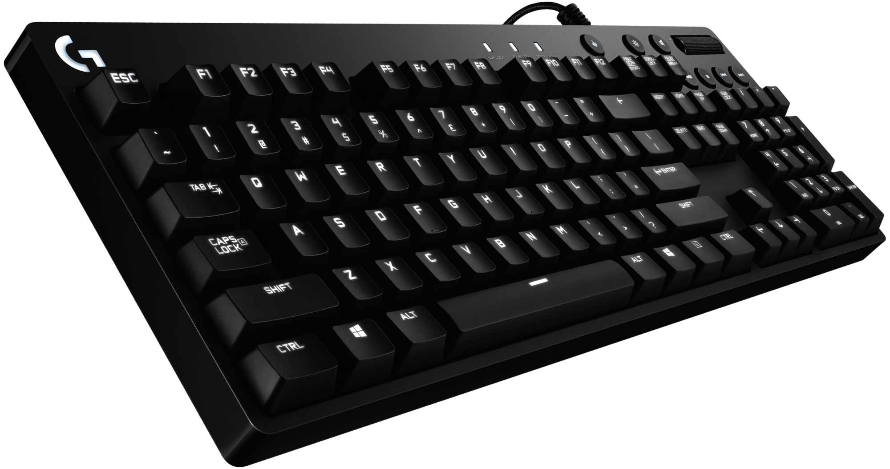
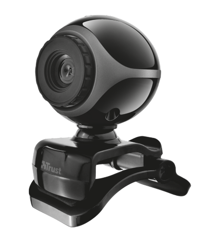
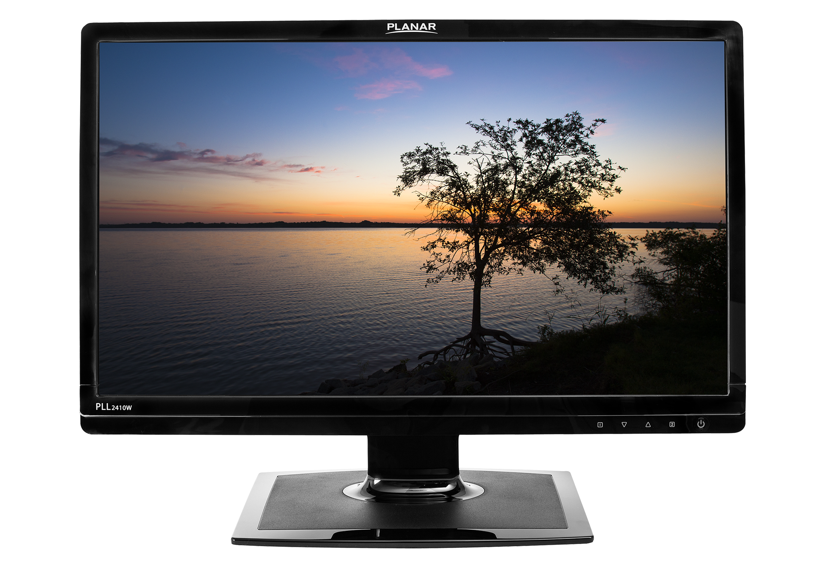
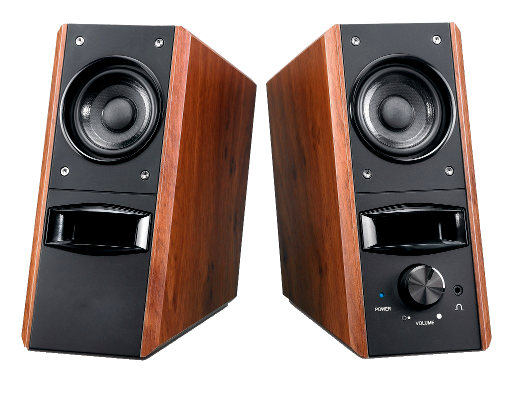
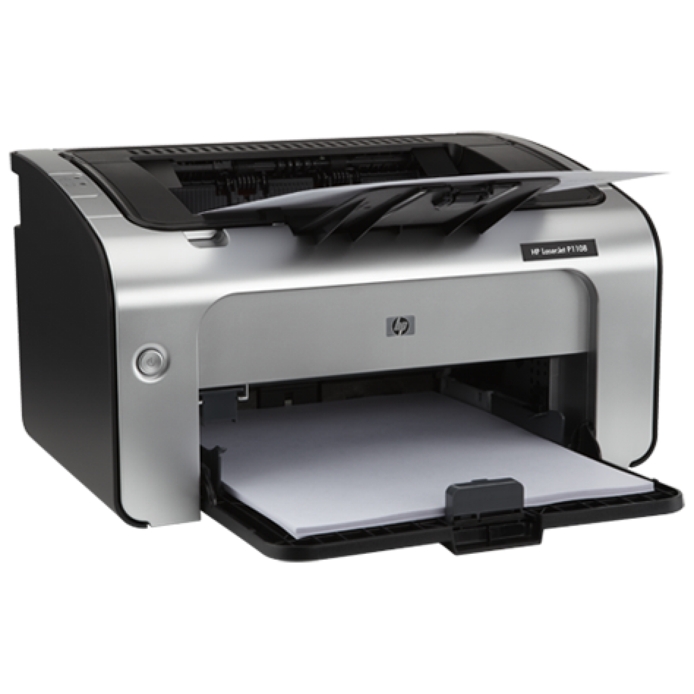

Periféricos
Periféricos são todos e quaisquer dispositivos de hardware externo conectado ao computador,
podendo dizer que são partes físicas que se conectam por fora do gabinete.
Podemos classificar os periféricos em dois tipos, os de entrada e os de saída. Segue abaixo
a explicação de cada, e os principais periféricos de um computador.
Periféricos de entrada
Os periféricos de entrada são responsáveis por transmitir as informações para o computador.
Segue abaixo exemplos de periféricos de entrada.
Mouse
Mouse é o periférico responsável por mover o ponteiro da tela, que por sua vez, é o
objeto que utilizará para navegar por onde quiser.
Teclado

É o principal periférico para entrada de texto, sendo responsável por digitações e atalhos.
Webcam

Webcam é uma câmera de vídeo que capta imagens e que transfere para um computador.
Sendo usada para vídeo-chamadas, produzir vídeos, monitoramento e etc.
Periféricos de saída
Periféricos de saída são os responsáveis por receber as informações do computador;
Segue abaixo exemplos de periféricos de saída.
Monitor

Monitor é um dispositivo de saída para o computador que mostra em sua tela a transmissão
do computador e resultado das operações. Sendo o responsável por passar a parte visual
ao usuário.
Caixas de som

São caixas com alto falantes que reproduzem sons emitidos pelo computador, e repassando
ao usuário em frequências agradáveis aos ouvidos humanos.
Impressora

Impressora é um dispositivo de saída responsável por repassar conteúdos escolhidos
por meio computacional para uma folha de papel, seja um texto ou desenhos feitos no
computador.
Sistemas operacionais
Um sistema operacional é o software que gerencia diretamente os recursos e o hardware de um sistema, como CPU,
memória e armazenamento. O sistema operacional intermedeia a comunicação entre as aplicações e o hardware,
conectando todos os seus programas aos recursos físicos que executam tarefas.
Exemplos abaixos de sistemas operacionais:
Windows

Windows é um sistema operacional de multitarefas para computadores e dispositivos móveis desenvolvido pela
Microsoft. A palavra Windows significa literalmente “janelas”, na tradução do inglês para o português.
Considerado um dos sistemas operacionais mais utilizados em todo o mundo, o Windows começou a ser projetado em
1981, mas foi apenas em 1993 que sua primeira versão foi lançada.
Inicialmente, o Windows oferecia apenas uma interface gráfica, funcionando unicamente em programas em modo
gráfico. Desde então, este sistema operacional tem evoluído, tanto em termos de funcionalidades, design e
eficiência. Até o momento, o Microsoft já conta com dezenas de atualizações, sendo as mais conhecidas: Windows
95, Windows 98, Windows 2000, Windows XP, Windows Vista e, mais recentemente, o Windows 11.
Fonte:
https://www.significados.com.br/windows/
macOS

O macOS foi introduzido em 1984 como sistema operacional da linha Macintosh de computadores pessoais (PCs) da
empresa.
O Macintosh foi quem trouxe a era dos sistemas de interface gráfica de usuário (GUI), e inspirou a Microsoft
Corporation a desenvolver seu próprio GUI, o Sistema operacional Windows.
O sistema operacional macOS são pré0instalado em todos os computadores pessoais Macs desde 2002, tornando-se o
segundo sistema operacional de desktop mais utilizado no mundo todo, perdendo apenas para o sistema
operacional da Microsoft, o Windows.
Fonte:
https://www.tekimobile.com/o-que-e-macos-sistema-operacional/
Linux
O Linux é um sistema operacional, assim como o Windows da Microsoft e o Mac OS da Apple. Ele foi criado pelo
finlandês Linus Torvalds, e o nome é a mistura do nome do criador com Unix, um antigo sistema operacional da
empresa de mesmo nome.O Linux não é totalmente um sistema operacional. Ele é o que se chama de kernel (o
núcleo do sistema operacional). O núcleo do sistema é o responsável pela integração dos dispositivos de
hardware do computador com os programas (softwares). Como o Linux está disponível de graça e com código-fonte
aberto, qualquer pessoa ou organização pode juntá-lo a um conjunto de softwares para criar um sistema
operacional customizado.
Fonte:
https://www.techtudo.com.br/noticias/2011/12/o-que-e-linux.ghtml